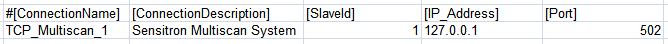
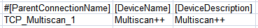
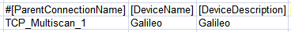
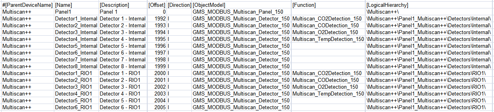
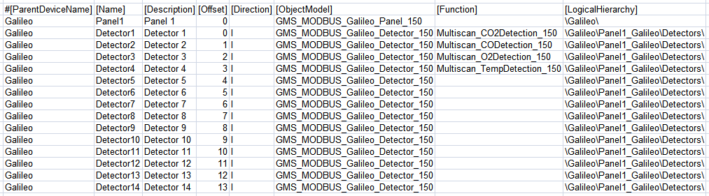

Multiscan Configuration (CSV) File
To integrate Multiscan++ or Galileo control panels into Desigo CC you must first prepare a textual configuration file in CSV (comma separated values) format that defines the data structure for the panel.
To do this, use Microsoft Excel or a text editor to edit the configuration file.
NOTE: Use a comma (,) as separator.
You can then use this file to import the configuration.
For reference information about the Modbus configuration CSV file, see CSV File for Modbus Device Import.
To obtain pre-configured CSV sample files to edit, contact the Technical Support team.
Pre-configured sample files can be used to create custom configuration files by removing unwanted gas detectors and relays according to the specific configuration.

Do not change the IDs already configured since they are fixed in the Modbus interface. Therefore, each detector or relay allocates its own fixed Modbus register.
To have the panel data imported and its diagnostic provided, the panel rows must not be deleted.
Also, pre-configured sample files provide examples for function mapping in the first four detector lines of each sample file. These can be useful when adding new points and starting from an example of an existing point type included in the CSV file with functions defined. The following functions are currently available:
- CO Detection
- CO2 Detection
- O2 Detection
- Temperature Detection

Multiscan++ function mapping samples
For the Multiscan++ control panel types, in addition to the first four detector lines which are for the internal detectors, pre-configured sample files provide four function mapping samples for the first four detectors connected to the loop.
Additionally, since the device points are imported into Management View as a flat list, pre-configured sample files also provide a predefined logical view that can be used for the configuration required on the field site.
As for the logical view, pre-configured sample files can be also modified to automatically create a user-defined view out of the import. This part is not provided in pre-configured CSV files because user views strictly depend on the customer’s requirements that can be easily added.
Multiscan++/Galileo Configuration File Sections
Section | Description |
[Connections] | Communication channels between Multiscan and Desigo CC. 1 interface for each device must be defined. |
[Devices] | Galileo or Mutliscan++ control panels. |
[Points] | Physical points. |
Multiscan++/Galileo Connections Data
The [Connections] section comprises the following data:
Data | Description |
[ConnectionName] | Interface name. Special characters are not allowed. |
[ConnectionDescription] | Interface description to display in System Browser. |
[SlaveId] | Galileo or Mutliscan++ Modbus subordinate address. |
[IP_Address] | Interface IP address. |
[Port] | TCP Modbus port. Default value: 502. |
[Alias] | Not used. |
[FunctionName] | Not used. |
[Discipline ID] | Not used. |
[Subdiscipline ID] | Not used. |
[Type ID] | Not used. |
[Subtype ID] | Not used. |

Multiscan++/Galileo Devices Data
The [Devices] section comprises the following data:
Data | Description |
[ParentConnectionName] | Name of the interface assigned to this device. |
[DeviceName] | Device name. |
[DeviceDescription] | Device description to display in System Browser. |
[ObjectModel] | Not used. |
[Alias] | Not used. |
[Function Name] | Not used. |
[Discipline ID] | Not used. |
[Subdiscipline ID] | Not used. |
[Type ID] | Not used. |
[Subtype ID] | Not used. |
[LogicalHierarchy] | Used to create a hierarchy in the logical view. |
[UserHierarchy] | Used to create a hierarchy in the user-defined view. |


Multiscan++/Galileo Points Data
The [Points] section comprises the following data:
Data | Description |
[ParentDeviceName] | Name of the device to which the point is connected. |
[Name] | Point name. Special characters are not allowed. |
[Description] | Point description to display in System Browser. |
[FunctionCode] | Not used. |
[Offset] | Used in combination with the import rules table to achieve the correct value of the register. For more information about the rules that apply to the different Multiscan CSV configuration files, see below. |
[SubIndex] | Not used. |
[DataType] | Not used. |
[Direction] | Defines the address/response mode used for accessing the value on the Modbus server:
To read back an output item, a Modbus InOut point must be created. In this specific case (Multiscan ++ and Galileo panels) this field is always set to “I” in the CSV files. Anyway, during the import it is automatically set by the system because this association is defined in the import rules of this extension. |
[Object Model] | Name of the object model linked to this point. Multiscan++ panel
Galileo panel
|
[Property] | Not used. |
[Alias] | Not used. |
[Function] | “Function name” used to automatically associate the function (for example, “Multiscan_CO2Detection_150”) to the point instance during the import of the CSV file. |
[Discipline ID] | Not used. |
[Subdiscipline ID] | Not used. |
[Type ID] | Not used. |
[Subtype ID] | Not used. |
[Min] | Not used. |
[Max] | Not used. |
[MinRaw] | Not used. |
[MaxRaw] | Not used. |
[MinEng] | Not used. |
[MaxEng] | Not used. |
[Resolution] | Not used. |
[Eng Unit] | Not used. |
[StateText] | Not used. |
[AlarmClass] | Not used. |
[AlarmType] | Not used. |
[AlarmValue] | Not used. |
[EventText] | Not used. |
[NormalText] | Not used. |
[UpperHysteresis] | Not used. |
[LowerHysteresis] | Not used. |
[LogicalHierarchy] | Used to create a hierarchy in the Logical View. |
[UserHierarchy] | Used to create a hierarchy in the User-Defined View. |


Rules for Multiscan ++ with RIO Detectors
- Offset = 0 (zero) is required for the Multiscan panel in the first line.
- Offset = 1992 is required for Internal Detector 1. The following internal detectors use consecutive offsets (Internal Detector 2 -> 1993, Internal Detector 8 -> 1999, and so on). Max Offset for internal detectors is 1999.
- Offset = 2000 is required for Detector 1 of RIO1. The following RIO detectors use consecutive offsets (Detector 2 of RIO2 -> 2001, Detector 8 of RIO1 -> 2007, Detector 1 of RIO2 -> 2008, Detector 8 of RIO2 -> 2015, and so on). Max Offset for RIO detectors is 2255.
- Offset = 5000 is required for Internal Relay 1. The following internal relays use consecutive offsets (Internal Relay 2 -> 5001, Internal Relay 8 -> 5007, and so on). Max Offset for internal relays is 5007.
- Offset = 5008 is required for Relay 1 of RIO201. The following RIO relays use consecutive offsets (Relay 2 of RIO201 -> 5009, Relay 16 of RIO201 -> 5023, Relay 1 of RIO202 -> 5024, Relay 16 of RIO202 -> 5039, and so on). Max Offset for internal relays is 5519.
Rules for Multiscan ++ with 485 detectors
- Offset = 0 (zero) is required for the Multiscan panel in the first line.
- Offset = 1992 is required for Internal Detector 1. The following internal detectors use consecutive offsets (Internal Detector 2 -> 1993, Internal Detector 8 -> 1999, and so on). Max Offset for internal detectors is 1999.
- Offset = 3000 is required for the detector with RS485 address 1. The following RS485 detectors use consecutive offsets (Detector Addr.2 -> 3001, Detector Add.8 -> 3007, Detector Addr.16 -> 3015, and so on). Max Offset for RS485 Detectors is 3255.
- Offset = 5000 is required for Internal Relay 1. The following internal relays use consecutive offsets (Internal Relay 2 -> 5001, Internal Relay 8 -> 5007, and so on). Max Offset for internal relays is 5007.
- Offset = 5008 is required for Relay 1 of RIO201. The following RIO relays use consecutive offsets (Relay 2 of RIO201 -> 5009, Relay 16 of RIO201 -> 5023, Relay 1 of RIO202 -> 5024, Relay 16 of RIO202 -> 5039, and so on). Max Offset for internal relays is 5519.
Rules for Multiscan Galileo
- Offset = 0 (zero) is required for the Multiscan panel in the first line.
- Offset = 0 is required for Detector 1. The following detectors use consecutive offsets (Detector 2 -> 1, Detector 8 -> 7, and so on). Max Offset for detectors is 199.
- Offset = 0 is required for Relay 1. The following relays use consecutive offsets (Relay 2 -> 1, Relay 8 -> 7, and so on). Max Offset for relays is 127.
Rules for Multiscan Galileo IDI detectors
- Offset = 0 (zero) is required for the Multiscan panel in the first line.
- Offset = 0 is required for Detector 1. The following detectors use consecutive offsets (Detector 2 -> 1, Detector 8 -> 7, and so on). Max Offset for detectors is 127.
- Offset = 0 is required for Relay 1. The following relays use consecutive offsets (Relay 2 -> 1, Relay 8 -> 7, and so on). Max Offset for relays is 127.